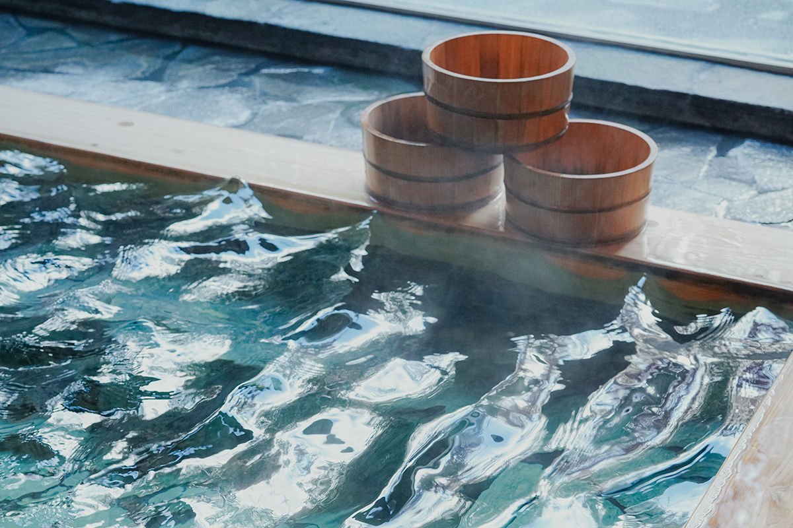
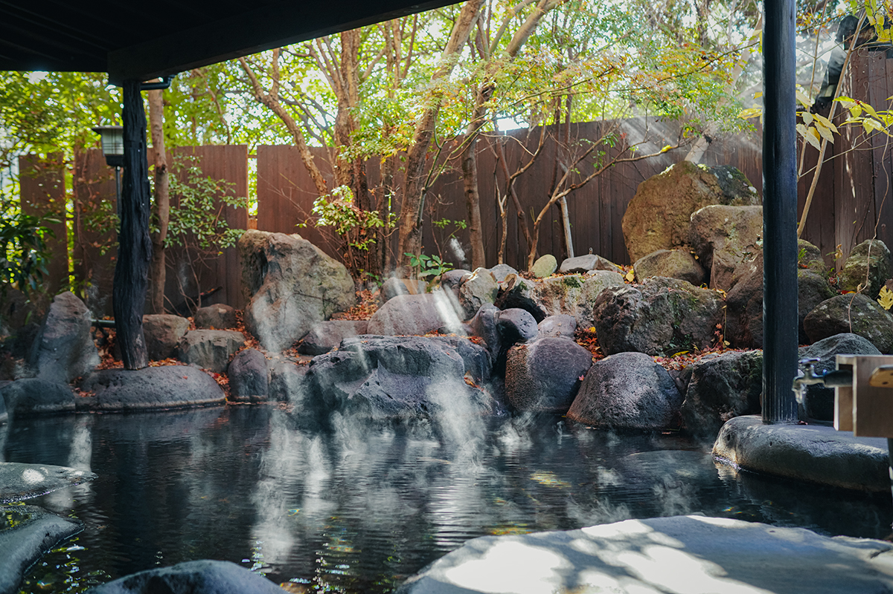
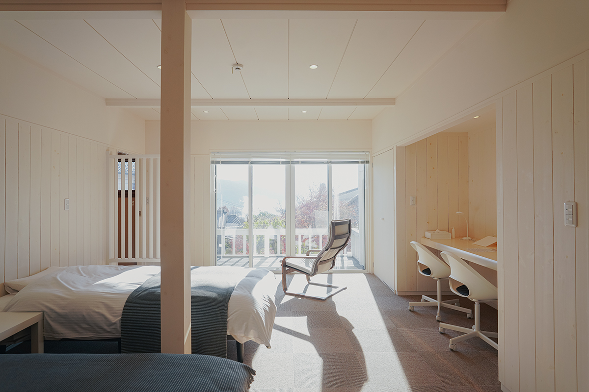
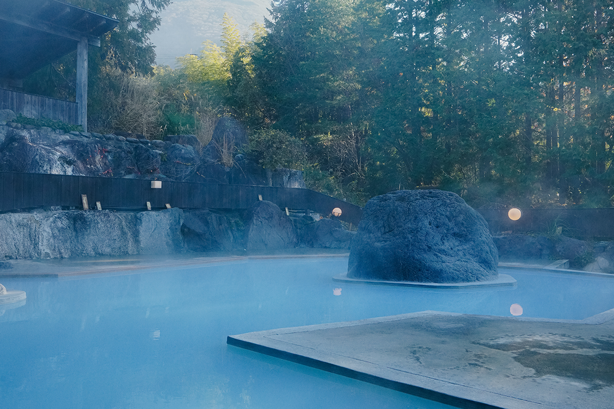
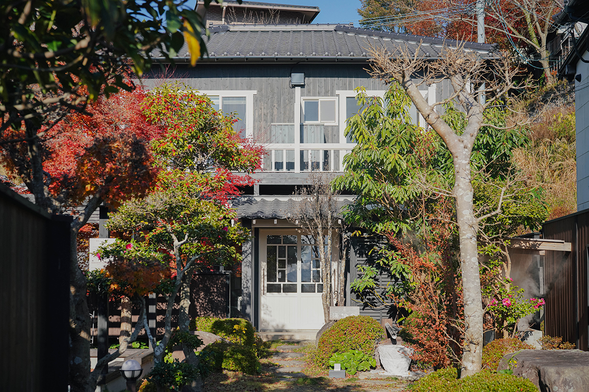
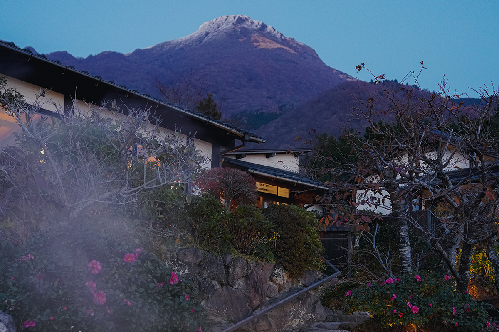
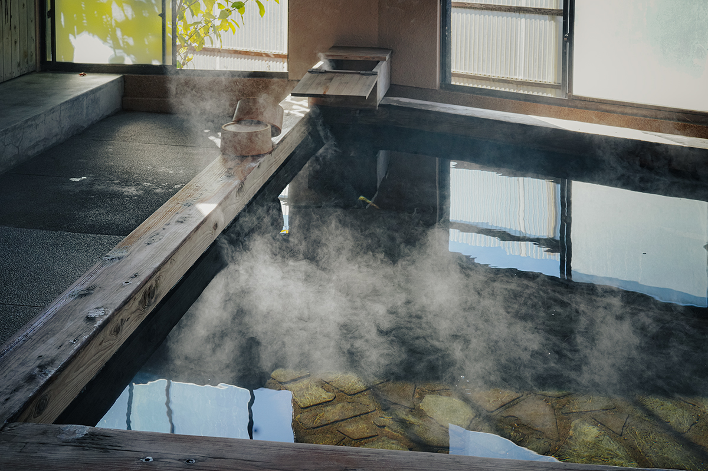
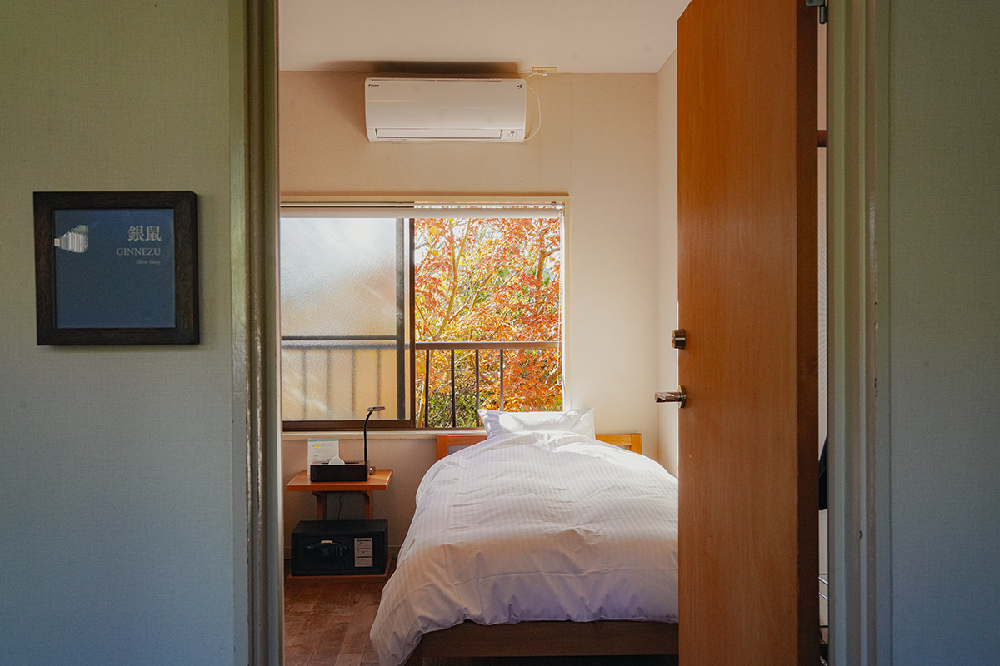
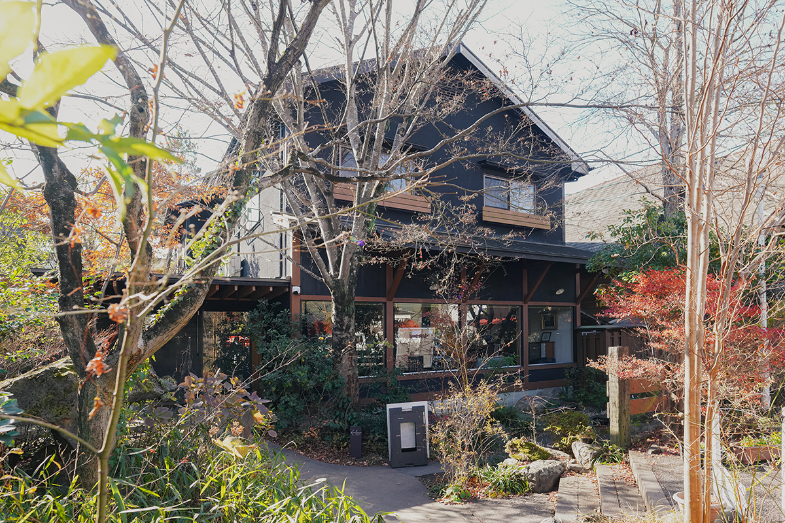

Префектура Оита · Юфуин · онсэны
Юфуин для долгого отдыха: голубой онсэн «Цуканома» и пять частных купален Yufuin Iyotomi

Юфуин, один из самых известных онсэнов острова Кюсю, когда-то прославило поколение хозяев гостиниц, которое сделало его модным курортом. Их дети и внуки возвращают городу старую роль: место, куда приезжают отдохнуть и поправить здоровье.
Курорт
Не за сувенирами, а за отдыхом
Жизнь в постоянном стрессе требует места, куда можно в любой момент уехать и привести себя в порядок. Исследовательница онсэнов, которая около 200 дней в году проводит в поездках по горячим источникам Японии и других стран и преподаёт в университете курс лечения водами, сравнивает такое место с пит-стопом: в гонке длиной в жизнь нужно вовремя заехать в бокс, заправиться и сменить шины, пока ничего не сломалось. По её мнению, именно это и станет главной ролью курортов с горячими источниками.

В горячей воде заключена энергия живой Земли. Окунувшись в хороший онсэн, почти каждый выдыхает: «Ожил!» Исследовательница решила проверить, правда ли это, и измерила состояние организма до и после купания прибором восточной медицины. Оказалось, что участки тела, работавшие на износ, после ванны успокаивались, а те, что ослабли от холода и стресса, снова начинали работать как следует. Среди показаний к лечению на источниках официально значатся расстройства вегетативной нервной системы и последствия стресса, включая бессонницу и подавленность, так что онсэн полезен и для душевного равновесия, и для сна.
После пандемии многие люди по всему миру пересмотрели свои взгляды на жизнь и на путешествия. Всё больше тех, кому важнее не осмотр достопримечательностей и покупки, а время для себя, покой и отдых. На этом фоне Юфуин снова поворачивается лицом к своему прошлому курорта для лечения водами.
Два дома
Остаться подольше

Путешествовать сегодня можно по-разному, и сами гостиницы тоже меняются. В Юфуин много небольших семейных заведений со своим характером, и это разнообразие одна из главных причин сюда ехать.
«Цуканома» примерно с 2016 года постепенно перестраивалась и стала гостиницей для долгого отдыха на источниках. Здесь принимают тех, кто совмещает работу и отпуск, и кочующих фрилансеров, а для художников есть мастерская, где можно творить между купаниями. Хозяева явно увлечены одной идеей: дать гостям свободно распоряжаться своим временем рядом с горячей водой.
Yufuin Iyotomi гибко подстраивается под время: сюда приезжают на одну ночь семьями, на спортивные сборы и по делам, так что это одновременно гостиница для туристов и место для долгого пребывания.
«Цуканома»
Голубой онсэн и котлы на пару
«Цуканома» это целый посёлок при онсэне, где живут так, будто поселились у источника. Есть номера со своей купальней и простые корпуса без излишеств. Еду здесь не подают: готовить можно на общей кухне (за плату), в котлах на пару онсэна или на маленьких кухнях в номерах, а можно ходить в рестораны. Получается что-то вроде второго дома и новая форма старого обычая тодзи, лечения водами.

Молочно-голубая вода похожа на сон. В ней ещё лучше: на ощупь она мягкая и тягучая, как сыворотка для лица. Это натриево-хлоридный источник: метакремниевая кислота доставляет влагу в кожу, а тонкая солевая плёнка удерживает её, поэтому такие воды называют источниками красоты.


«Цуканома»
- Адрес
- префектура Оита, город Юфу, Юфуин, Кавками, 444-3
- Телефон
- +81 977-85-3105 (с 9:00 до 21:00)
- Выходные
- вторник, среда
- Цены / Вход
- корпус для долгого проживания от 6500 иен за ночь (с налогом и сервисным сбором)
Yufuin Iyotomi
Купальни под замок и сборы бейсболистов
По описанию тарифов не догадаешься, но именно здесь каждый год проходит «реабилитационный лагерь в Юфуин» бейсбольного клуба «Хиросима Тоё Карп». Гостиница давно помогает профессиональным спортсменам восстанавливать тело в горячей воде. Многие гости возвращаются снова и снова: здесь легко, без напряжения, набираются сил.

Все пять купален частные, их занимают целиком, так что никто не мешает. Славится и кухня, вкусная и щедрая: местная курица, чёрная свинина, говядина Бунго, ставрида сэки-адзи, поданная целиком в виде сасими. Мясо, рыба, рис и овощи местные, и такая еда действительно прибавляет сил.


Yufuin Iyotomi
- Адрес
- префектура Оита, город Юфу, Юфуин, Каваминами, 848
- Телефон
- +81 977-84-2007
- Цены / Вход
- главный корпус, ночь с завтраком и ужином от 13 000 иен (с налогом и сервисным сбором)
- Сайт
- iyotomi.jp
Фото: Адзуса Сигэнобу.